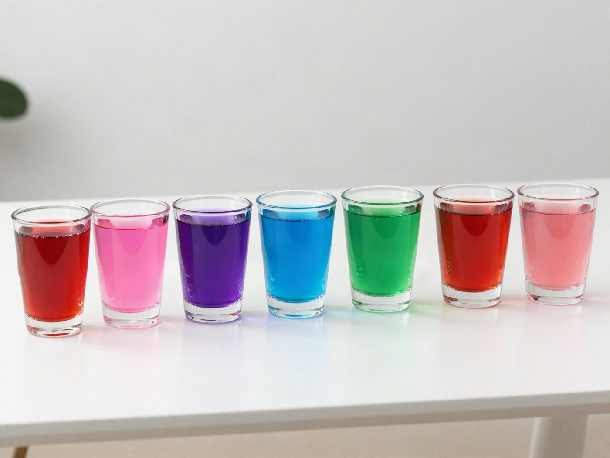

전체 단원 › 실험·활동 › 6학년 1학기 과학
적양배추 산·염기 지시약

보라색 양배추 물이 식초를 만나면 분홍색, 베이킹소다를 만나면 파란색으로 변해요.
40분 · 난이도 ★★☆ 보통
준비물
- 적양배추 잎 2~3장 — 잘게 찢어서 써요
- 뜨거운 물 — 전기포트 물 (어른이 부어요)
- 내열 그릇 1개 — 양배추 물을 우리는 용도. 뜨거운 물에 견디는 그릇
- 투명 컵 6개 — 유리컵이나 투명 플라스틱 컵
- 체 — 주방용 체나 거름망
- 산성 재료 — 식초, 레몬즙
- 염기성 재료 — 베이킹소다, 비눗물
- 색 비교표 도안 — 아래에서 내려받아 인쇄해요
만드는 방법
- 양배추 물 우리기
잘게 찢은 잎을 그릇에 담고 뜨거운 물을 부어 10분 기다려요. 진한 보라색 물이 나오면 체로 걸러요. - 컵에 나눠 담기
식은 양배추 물을 투명 컵 여러 개에 3cm씩 나눠 담아요. 한 컵은 비교용으로 그대로 둬요. - 산성 재료 넣기
식초와 레몬즙을 한 숟가락씩 서로 다른 컵에 넣어요. 색이 어떻게 변하나요? - 염기성 재료 넣기
베이킹소다를 물에 녹여 다른 컵에 넣고, 비눗물도 넣어 봐요. - 색 비교표와 맞춰 보기
색 비교표 옆에 컵을 줄 세우고, 산성인지 염기성인지 기록표에 적어요. 맨 위 사진처럼요!
관찰해 봐요
- 가장 진한 분홍색이 된 컵은 무엇을 넣은 컵인가요?
- 식초 컵에 베이킹소다를 조금씩 넣으면 어떤 일이 생기나요?
- 우유, 사이다, 치약 녹인 물은 어느 쪽일까요?
왜 그럴까?
적양배추 속에는 '색깔 탐정' 물질이 들어 있어요. 이 탐정은 신맛 나는 산성을 만나면 분홍색 옷으로, 미끈미끈한 염기성을 만나면 파란색이나 초록색 옷으로 갈아입어요. 그래서 색만 보고도 산성인지 염기성인지 알 수 있어요.
학교 교육과정 연결
- [6과09-01] 여러 가지 용액에 지시약을 넣었을 때의 변화를 관찰하여 용액을 산성 용액과 염기성 용액으로 분류할 수 있다.
- [6과09-02] 산성 용액과 염기성 용액의 성질을 관찰하고, 산성 용액과 염기성 용액을 섞을 때 용액의 성질 변화를 실험을 통해 추론할 수 있다.